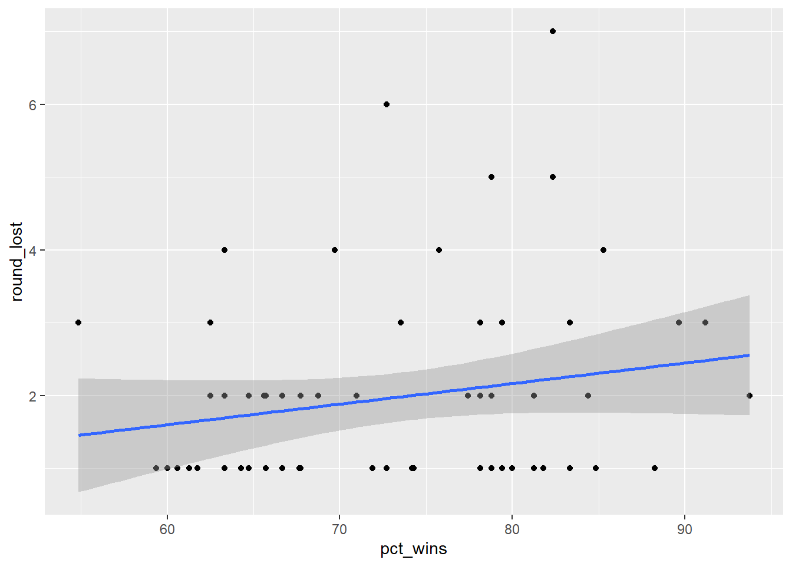
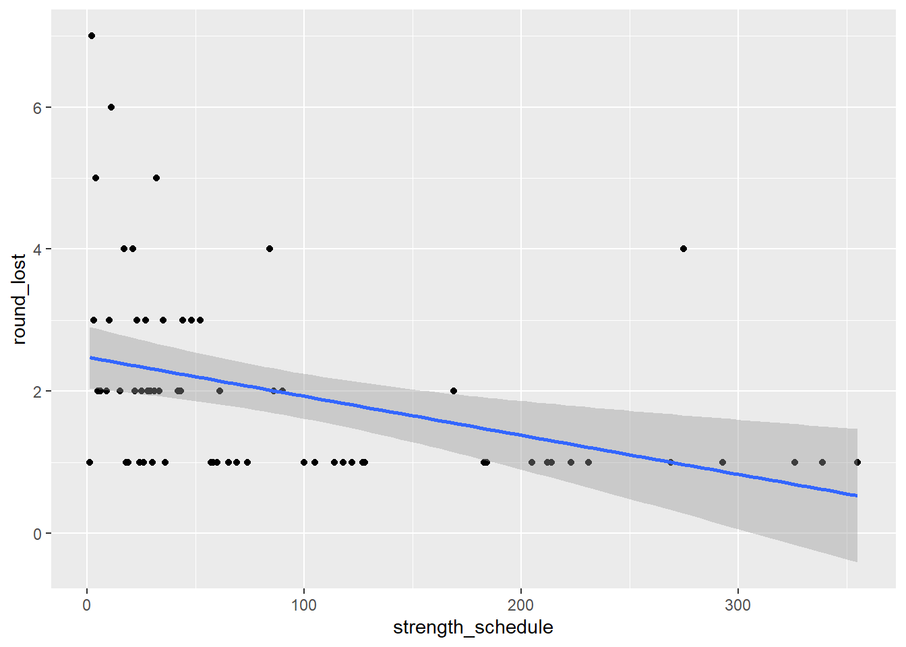
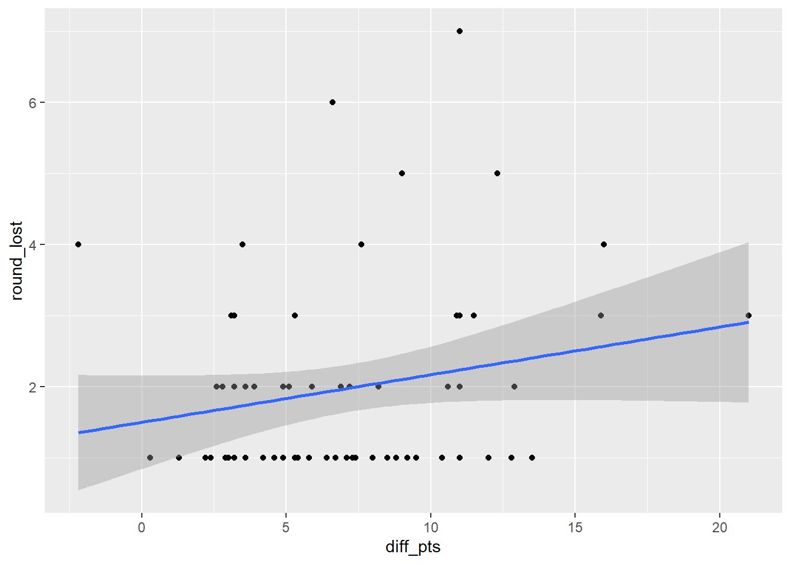

Goal: Create a model for predicting how far in March Madness a team
will go. Product: The perfect March Madness bracket.
Data: 2022 team stats on season win percentage, conference difficulty,
times the team has made it to each round of the post-season, bracket
rank, and power rankings from Bleacher Report. Interpretation: I predict
Kansas and Duke will play in the 2023 championship game and Kansas will
win based on my model.
I would like to recognize that 1 year of post-season data is not great for predicting future brackets, but it took awhile to get all this data into a usable form, so it’s what we’ll work with for this portfolio and my bracket this year.
library(tidyverse)
library(tidyr)
library(tidytuesdayR)
library(tidymodels)
library(openintro)
library(broom)mm22 <- read_csv("docs/2022marchmadness.csv", show_col_types = FALSE)First, we’ll check out how well the season percent wins predicts the round the team lost in the post-season. This is unlikely to be very predictive because the teams have a large range of schedule difficulties, meaning that some teams play the best teams all season and others play average teams all season. It’s likely that teams that play better teams in their regular season will go further in the post season.
ggplot(mm22, aes(y = round_lost, x=pct_wins))+
geom_point()+
stat_smooth(method="lm")## `geom_smooth()` using formula = 'y ~ x'
linear_reg() %>%
set_engine("lm") %>%
fit(round_lost ~ pct_wins, data = mm22) %>%
tidy()## # A tibble: 2 × 5
## term estimate std.error statistic p.value
## <chr> <dbl> <dbl> <dbl> <dbl>
## 1 (Intercept) -0.0956 1.39 -0.0686 0.946
## 2 pct_wins 0.0283 0.0188 1.50 0.138summary(lm(round_lost ~ pct_wins, data = mm22))##
## Call:
## lm(formula = round_lost ~ pct_wins, data = mm22)
##
## Residuals:
## Min 1Q Median 3Q Max
## -1.3977 -0.9593 -0.5678 0.3770 4.7687
##
## Coefficients:
## Estimate Std. Error t value Pr(>|t|)
## (Intercept) -0.09563 1.39344 -0.069 0.946
## pct_wins 0.02826 0.01879 1.504 0.138
##
## Residual standard error: 1.338 on 62 degrees of freedom
## Multiple R-squared: 0.03518, Adjusted R-squared: 0.01962
## F-statistic: 2.261 on 1 and 62 DF, p-value: 0.1378As predicted, percent wins is not a great predictor of how far a team will go in the post-season. Next, we’ll take a look at the difficulty of their conference. In hindsight, I should have scored difficulty in the opposite direction because lower scores indicate more difficult. This is because I scored as rankings of most difficult, but this shouldn’t affect how the model works. Conference difficulty isn’t too bad at predicting the round a team lost. The more difficulty a team’s conference is, the further they go in the post-season tournament.
ggplot(mm22, aes(y = round_lost, x=strength_schedule))+
geom_point()+
stat_smooth(method="lm")## `geom_smooth()` using formula = 'y ~ x'
linear_reg() %>%
set_engine("lm") %>%
fit(round_lost ~ strength_schedule, data = mm22) %>%
tidy()## # A tibble: 2 × 5
## term estimate std.error statistic p.value
## <chr> <dbl> <dbl> <dbl> <dbl>
## 1 (Intercept) 2.48 0.218 11.4 7.92e-17
## 2 strength_schedule -0.00549 0.00167 -3.28 1.70e- 3summary(lm(round_lost ~ strength_schedule, data=mm22))##
## Call:
## lm(formula = round_lost ~ strength_schedule, data = mm22)
##
## Residuals:
## Min 1Q Median 3Q Max
## -1.4739 -0.8367 -0.3119 0.4873 4.5316
##
## Coefficients:
## Estimate Std. Error t value Pr(>|t|)
## (Intercept) 2.479357 0.217829 11.382 <2e-16 ***
## strength_schedule -0.005493 0.001674 -3.281 0.0017 **
## ---
## Signif. codes: 0 '***' 0.001 '**' 0.01 '*' 0.05 '.' 0.1 ' ' 1
##
## Residual standard error: 1.257 on 62 degrees of freedom
## Multiple R-squared: 0.1479, Adjusted R-squared: 0.1342
## F-statistic: 10.77 on 1 and 62 DF, p-value: 0.0017Next, we’ll explore how a team’s bracket rank and their power ranking predict how far they go in the tournament. These two rankings account for 23% of the variance in the round a team lost.
linear_reg() %>%
set_engine("lm") %>%
fit(round_lost ~ overall_rank + bracket_rank, data = mm22) %>%
tidy()## # A tibble: 3 × 5
## term estimate std.error statistic p.value
## <chr> <dbl> <dbl> <dbl> <dbl>
## 1 (Intercept) 3.07 0.316 9.72 5.29e-14
## 2 overall_rank -0.0596 0.0372 -1.60 1.14e- 1
## 3 bracket_rank 0.106 0.156 0.679 4.99e- 1summary(lm(round_lost ~ overall_rank + bracket_rank, data = mm22))##
## Call:
## lm(formula = round_lost ~ overall_rank + bracket_rank, data = mm22)
##
## Residuals:
## Min 1Q Median 3Q Max
## -1.9805 -0.7780 -0.1311 0.2749 4.0060
##
## Coefficients:
## Estimate Std. Error t value Pr(>|t|)
## (Intercept) 3.06707 0.31565 9.717 5.29e-14 ***
## overall_rank -0.05964 0.03719 -1.604 0.114
## bracket_rank 0.10582 0.15576 0.679 0.499
## ---
## Signif. codes: 0 '***' 0.001 '**' 0.01 '*' 0.05 '.' 0.1 ' ' 1
##
## Residual standard error: 1.182 on 61 degrees of freedom
## Multiple R-squared: 0.2585, Adjusted R-squared: 0.2342
## F-statistic: 10.63 on 2 and 61 DF, p-value: 0.0001093Now, we’ll look at how a team’s history of making it to further round of the tournament (starting in the year 2000) will predict how far they will go in the tournament in the current year. This accounts for 41% of the variance in the round a team lost.
linear_reg() %>%
set_engine("lm") %>%
fit(round_lost ~ x_sweet16 + x_elite8 + x_final4 + x_runner + x_won, data = mm22) %>%
tidy()## # A tibble: 6 × 5
## term estimate std.error statistic p.value
## <chr> <dbl> <dbl> <dbl> <dbl>
## 1 (Intercept) 1.34 0.173 7.73 1.74e-10
## 2 x_sweet16 0.137 0.0860 1.60 1.16e- 1
## 3 x_elite8 0.0709 0.190 0.372 7.11e- 1
## 4 x_final4 -0.290 0.226 -1.29 2.04e- 1
## 5 x_runner 0.524 0.374 1.40 1.67e- 1
## 6 x_won 0.716 0.359 1.99 5.10e- 2summary(lm(round_lost ~ x_sweet16 + x_elite8 + x_final4 + x_runner + x_won, data = mm22))##
## Call:
## lm(formula = round_lost ~ x_sweet16 + x_elite8 + x_final4 + x_runner +
## x_won, data = mm22)
##
## Residuals:
## Min 1Q Median 3Q Max
## -2.7125 -0.4759 -0.3386 0.5241 2.4532
##
## Coefficients:
## Estimate Std. Error t value Pr(>|t|)
## (Intercept) 1.33862 0.17318 7.730 1.74e-10 ***
## x_sweet16 0.13730 0.08597 1.597 0.116
## x_elite8 0.07087 0.19046 0.372 0.711
## x_final4 -0.29007 0.22571 -1.285 0.204
## x_runner 0.52366 0.37383 1.401 0.167
## x_won 0.71593 0.35930 1.993 0.051 .
## ---
## Signif. codes: 0 '***' 0.001 '**' 0.01 '*' 0.05 '.' 0.1 ' ' 1
##
## Residual standard error: 1.039 on 58 degrees of freedom
## Multiple R-squared: 0.4559, Adjusted R-squared: 0.409
## F-statistic: 9.718 on 5 and 58 DF, p-value: 8.85e-07Here, we’ll take a look at freethrow percentage, points earned and points allowed. Freethrow percentage isn’t related to round lost. The difference in points earned and points allowed seems to somewhat help predict what round a team lost.
ggplot(mm22, aes(y = round_lost, x=diff_pts))+
geom_point()+
stat_smooth(method="lm")## `geom_smooth()` using formula = 'y ~ x'
linear_reg() %>%
set_engine("lm") %>%
fit(round_lost ~ ft_pct, data = mm22) %>%
tidy()## # A tibble: 2 × 5
## term estimate std.error statistic p.value
## <chr> <dbl> <dbl> <dbl> <dbl>
## 1 (Intercept) -2.84 3.69 -0.770 0.445
## 2 ft_pct 0.0663 0.0507 1.31 0.195summary(lm(round_lost ~ ft_pct, data = mm22))##
## Call:
## lm(formula = round_lost ~ ft_pct, data = mm22)
##
## Residuals:
## Min 1Q Median 3Q Max
## -1.2874 -1.0122 -0.3498 0.4997 5.0839
##
## Coefficients:
## Estimate Std. Error t value Pr(>|t|)
## (Intercept) -2.83815 3.68822 -0.770 0.445
## ft_pct 0.06631 0.05066 1.309 0.195
##
## Residual standard error: 1.343 on 62 degrees of freedom
## Multiple R-squared: 0.02689, Adjusted R-squared: 0.01119
## F-statistic: 1.713 on 1 and 62 DF, p-value: 0.1954linear_reg() %>%
set_engine("lm") %>%
fit(round_lost ~ diff_pts, data = mm22) %>%
tidy()## # A tibble: 2 × 5
## term estimate std.error statistic p.value
## <chr> <dbl> <dbl> <dbl> <dbl>
## 1 (Intercept) 1.50 0.329 4.57 0.0000242
## 2 diff_pts 0.0670 0.0392 1.71 0.0924summary(lm(round_lost ~ diff_pts, data = mm22))##
## Call:
## lm(formula = round_lost ~ diff_pts, data = mm22)
##
## Residuals:
## Min 1Q Median 3Q Max
## -1.4047 -0.9339 -0.4423 0.3157 4.7629
##
## Coefficients:
## Estimate Std. Error t value Pr(>|t|)
## (Intercept) 1.50000 0.32858 4.565 2.42e-05 ***
## diff_pts 0.06701 0.03920 1.709 0.0924 .
## ---
## Signif. codes: 0 '***' 0.001 '**' 0.01 '*' 0.05 '.' 0.1 ' ' 1
##
## Residual standard error: 1.331 on 62 degrees of freedom
## Multiple R-squared: 0.04501, Adjusted R-squared: 0.0296
## F-statistic: 2.922 on 1 and 62 DF, p-value: 0.09238Now, I’m going to add some of these variables together to make the best model. Using backward-selection, I came to the following model for predicting the round a team will lose.
Round Lost = 2.80 + .62(Runner up times) + .65(Champ times) -.025(power rank) - .045(mean difference in points)
The intercept is not super helpful because it predicts the round a team will lose if they have never made it to championship game but are ranked basically in 1st, which is pretty much not ever going to happen. This model accounts for 42.8% of variance in the the round a team loses.
linear_reg() %>%
set_engine("lm") %>%
fit(round_lost ~ x_runner + x_won + overall_rank+ diff_pts, data = mm22) %>%
tidy()## # A tibble: 5 × 5
## term estimate std.error statistic p.value
## <chr> <dbl> <dbl> <dbl> <dbl>
## 1 (Intercept) 2.80 0.570 4.92 0.00000731
## 2 x_runner 0.621 0.247 2.52 0.0146
## 3 x_won 0.651 0.191 3.41 0.00117
## 4 overall_rank -0.0249 0.00937 -2.66 0.0102
## 5 diff_pts -0.0453 0.0389 -1.17 0.249summary(lm(round_lost ~ x_runner + x_won + overall_rank+ diff_pts, data = mm22))##
## Call:
## lm(formula = round_lost ~ x_runner + x_won + overall_rank + diff_pts,
## data = mm22)
##
## Residuals:
## Min 1Q Median 3Q Max
## -2.82784 -0.56679 -0.09502 0.35921 2.75102
##
## Coefficients:
## Estimate Std. Error t value Pr(>|t|)
## (Intercept) 2.801507 0.569534 4.919 7.31e-06 ***
## x_runner 0.621001 0.246684 2.517 0.01456 *
## x_won 0.651477 0.190901 3.413 0.00117 **
## overall_rank -0.024893 0.009373 -2.656 0.01015 *
## diff_pts -0.045288 0.038861 -1.165 0.24855
## ---
## Signif. codes: 0 '***' 0.001 '**' 0.01 '*' 0.05 '.' 0.1 ' ' 1
##
## Residual standard error: 1.022 on 59 degrees of freedom
## Multiple R-squared: 0.464, Adjusted R-squared: 0.4277
## F-statistic: 12.77 on 4 and 59 DF, p-value: 1.505e-07Here, I loaded in the 2023 team data and predicted the round each team will lose and I can sort by highest to lowest and build my bracket. Overall, this isn’t a super insightful model because it is largely using the power rankings from Bleacher Report which must take in a bunch of other data to create their ranking, and past championship appearances from each team, which doesn’t totally mean much to how well a team will do in the current season. Nevertheless, we will see how far this model will get me in my March Madness pools. Based on this model, Kansas and Duke will play in the final and Kansas will win. This model still doesn’t account for teams being in the same side of the bracket and not necessarily going as far as they should, but I will not be able to deal with that here.
mm23 <- read_csv("docs/2023marchmadness.csv", show_col_types = FALSE)mm23<-mm23 %>%
mutate(round_lost = 2.8 + (.62*x_runner) + (.65*x_won) - (.025*overall_rank) - (.045*diff_pts))mm23 %>% # Top N highest values by group
arrange(desc(round_lost)) %>%
slice(1:64)## # A tibble: 64 × 17
## school region brack…¹ overa…² pct_w…³ league stren…⁴ x_swe…⁵ x_eli…⁶ x_fin…⁷
## <chr> <chr> <dbl> <dbl> <dbl> <chr> <dbl> <dbl> <dbl> <dbl>
## 1 Kansas west 1 2 79.4 Big12 2 14 11 6
## 2 Duke east 5 10 76.5 ACC 15 16 8 5
## 3 Uconn west 4 6 75.8 BigE 68 7 6 4
## 4 Kentuc… east 6 12 65.6 SEC 25 12 9 4
## 5 Gonzaga west 3 11 84.8 WCC 16 11 4 2
## 6 Michig… east 7 35 61.3 Big10 18 12 9 7
## 7 Arizona south 2 3 82.4 Pac12 36 11 6 1
## 8 Indiana midwe… 4 16 66.7 Big10 19 4 1 1
## 9 UCLA west 2 5 85.3 Pac12 37 11 4 4
## 10 Baylor south 3 19 68.8 Big12 5 5 3 1
## # … with 54 more rows, 7 more variables: x_runner <dbl>, x_won <dbl>,
## # ft_pct <dbl>, pts_earned <dbl>, pts_allowed <dbl>, diff_pts <dbl>,
## # round_lost <dbl>, and abbreviated variable names ¹bracket_rank,
## # ²overall_rank, ³pct_wins, ⁴strength_schedule, ⁵x_sweet16, ⁶x_elite8,
## # ⁷x_final4Lastly, I wanted to test out a model that doesn’t necessarily take into account previous win history. This model only accounts for 22.5% of the variance in the round a team lost, so doesn’t seem to be as good as the previous model but I’ll use it for a different bracket and see which one wins.
linear_reg() %>%
set_engine("lm") %>%
fit(round_lost ~ strength_schedule+ overall_rank+ ft_pct+ pts_earned+pts_allowed+bracket_rank, data = mm22) %>%
tidy()## # A tibble: 7 × 5
## term estimate std.error statistic p.value
## <chr> <dbl> <dbl> <dbl> <dbl>
## 1 (Intercept) 0.269 4.11 0.0654 0.948
## 2 strength_schedule 0.00125 0.00266 0.469 0.641
## 3 overall_rank -0.0853 0.0427 -2.00 0.0505
## 4 ft_pct 0.0612 0.0502 1.22 0.227
## 5 pts_earned -0.0603 0.0531 -1.14 0.261
## 6 pts_allowed 0.0455 0.0577 0.790 0.433
## 7 bracket_rank 0.165 0.162 1.01 0.315summary(lm(round_lost ~ strength_schedule+ overall_rank+ ft_pct+ pts_earned+pts_allowed+bracket_rank, data = mm22))##
## Call:
## lm(formula = round_lost ~ strength_schedule + overall_rank +
## ft_pct + pts_earned + pts_allowed + bracket_rank, data = mm22)
##
## Residuals:
## Min 1Q Median 3Q Max
## -1.8857 -0.7082 -0.2049 0.3437 4.0838
##
## Coefficients:
## Estimate Std. Error t value Pr(>|t|)
## (Intercept) 0.268575 4.108599 0.065 0.9481
## strength_schedule 0.001249 0.002665 0.469 0.6410
## overall_rank -0.085282 0.042675 -1.998 0.0505 .
## ft_pct 0.061250 0.050196 1.220 0.2274
## pts_earned -0.060301 0.053096 -1.136 0.2608
## pts_allowed 0.045539 0.057676 0.790 0.4331
## bracket_rank 0.164639 0.162284 1.015 0.3146
## ---
## Signif. codes: 0 '***' 0.001 '**' 0.01 '*' 0.05 '.' 0.1 ' ' 1
##
## Residual standard error: 1.189 on 57 degrees of freedom
## Multiple R-squared: 0.299, Adjusted R-squared: 0.2252
## F-statistic: 4.052 on 6 and 57 DF, p-value: 0.001887mm23<-mm23 %>%
mutate(round_lost2 = .269 + (.06*ft_pct) - (.06*pts_earned) + (.05*pts_allowed) - (.09*overall_rank)+ (.16*bracket_rank))
mm23 %>% # Top N highest values by group
arrange(desc(round_lost2)) %>%
slice(1:64)## # A tibble: 64 × 18
## school region brack…¹ overa…² pct_w…³ league stren…⁴ x_swe…⁵ x_eli…⁶ x_fin…⁷
## <chr> <chr> <dbl> <dbl> <dbl> <chr> <dbl> <dbl> <dbl> <dbl>
## 1 Duke east 5 10 76.5 ACC 15 16 8 5
## 2 Kansas west 1 2 79.4 Big12 2 14 11 6
## 3 Uconn west 4 6 75.8 BigE 68 7 6 4
## 4 Creigh… south 6 15 63.6 BigE 32 1 0 0
## 5 Kentuc… east 6 12 65.6 SEC 25 12 9 4
## 6 Arizona south 2 3 82.4 Pac12 36 11 6 1
## 7 Texas midwe… 2 7 76.5 Big12 9 5 3 1
## 8 UCLA west 2 5 85.3 Pac12 37 11 4 4
## 9 Houston midwe… 1 1 91.2 Am 38 3 2 1
## 10 Memphis east 8 21 76.5 Am 33 4 3 1
## # … with 54 more rows, 8 more variables: x_runner <dbl>, x_won <dbl>,
## # ft_pct <dbl>, pts_earned <dbl>, pts_allowed <dbl>, diff_pts <dbl>,
## # round_lost <dbl>, round_lost2 <dbl>, and abbreviated variable names
## # ¹bracket_rank, ²overall_rank, ³pct_wins, ⁴strength_schedule, ⁵x_sweet16,
## # ⁶x_elite8, ⁷x_final4Second lastly, instead of the round the team lost as the predictor, I ranked the teams by the outcome of March Madness from 2022 by each round and how badly they lost. We’ll see how this ranking is predicted based on the same variables. The first model takes into account the strength of the team’s schedule, their power rankings, free throw percentage, points earned, points allowed, and their bracket ranking.
Model: Final ranking = -2.13 + .022strength_schedule + .81overall_rank - .43ft_pct+ .5pts_earned+.13pts_allowed - 1.05bracket_rank
linear_reg() %>%
set_engine("lm") %>%
fit(final_ranking ~ strength_schedule + overall_rank +
ft_pct + pts_earned + pts_allowed + bracket_rank, data = mm22) %>%
tidy()## # A tibble: 7 × 5
## term estimate std.error statistic p.value
## <chr> <dbl> <dbl> <dbl> <dbl>
## 1 (Intercept) -2.14 51.4 -0.0415 0.967
## 2 strength_schedule 0.0216 0.0334 0.649 0.519
## 3 overall_rank 0.809 0.534 1.51 0.135
## 4 ft_pct -0.424 0.629 -0.675 0.502
## 5 pts_earned 0.501 0.665 0.753 0.455
## 6 pts_allowed 0.131 0.722 0.181 0.857
## 7 bracket_rank -1.05 2.03 -0.516 0.608summary(lm(final_ranking ~ strength_schedule + overall_rank +
ft_pct + pts_earned + pts_allowed + bracket_rank, data = mm22))##
## Call:
## lm(formula = final_ranking ~ strength_schedule + overall_rank +
## ft_pct + pts_earned + pts_allowed + bracket_rank, data = mm22)
##
## Residuals:
## Min 1Q Median 3Q Max
## -33.907 -9.553 0.101 10.944 27.955
##
## Coefficients:
## Estimate Std. Error t value Pr(>|t|)
## (Intercept) -2.13665 51.44920 -0.042 0.967
## strength_schedule 0.02164 0.03337 0.649 0.519
## overall_rank 0.80943 0.53439 1.515 0.135
## ft_pct -0.42441 0.62857 -0.675 0.502
## pts_earned 0.50068 0.66488 0.753 0.455
## pts_allowed 0.13078 0.72224 0.181 0.857
## bracket_rank -1.04918 2.03217 -0.516 0.608
##
## Residual standard error: 14.89 on 57 degrees of freedom
## Multiple R-squared: 0.4213, Adjusted R-squared: 0.3604
## F-statistic: 6.916 on 6 and 57 DF, p-value: 1.489e-05mm23<-mm23 %>%
mutate(round_lost3 = -2.145+ (.022*strength_schedule) +(.81*overall_rank)-(.43*ft_pct)+(.5*pts_earned)+(.13*pts_allowed)- (1.05*bracket_rank))
mm23 %>% # Top N highest values by group
arrange((round_lost3)) %>%
slice(1:64)## # A tibble: 64 × 19
## school region brack…¹ overa…² pct_w…³ league stren…⁴ x_swe…⁵ x_eli…⁶ x_fin…⁷
## <chr> <chr> <dbl> <dbl> <dbl> <chr> <dbl> <dbl> <dbl> <dbl>
## 1 Houston midwe… 1 1 91.2 Am 38 3 2 1
## 2 Duke east 5 10 76.5 ACC 15 16 8 5
## 3 Kansas west 1 2 79.4 Big12 2 14 11 6
## 4 UCLA west 2 5 85.3 Pac12 37 11 4 4
## 5 Uconn west 4 6 75.8 BigE 68 7 6 4
## 6 Texas midwe… 2 7 76.5 Big12 9 5 3 1
## 7 Purdue east 1 9 85.3 Big10 27 7 2 0
## 8 Kentuc… east 6 12 65.6 SEC 25 12 9 4
## 9 Creigh… south 6 15 63.6 BigE 32 1 0 0
## 10 Alabama south 1 4 85.3 SEC 1 2 1 0
## # … with 54 more rows, 9 more variables: x_runner <dbl>, x_won <dbl>,
## # ft_pct <dbl>, pts_earned <dbl>, pts_allowed <dbl>, diff_pts <dbl>,
## # round_lost <dbl>, round_lost2 <dbl>, round_lost3 <dbl>, and abbreviated
## # variable names ¹bracket_rank, ²overall_rank, ³pct_wins, ⁴strength_schedule,
## # ⁵x_sweet16, ⁶x_elite8, ⁷x_final4The second model takes into account the strength of schedule, times as runner up, times winning, and their power ranking.
Model: final ranking = 18.49 + .033strength_schedule - 4.96x_runner - 2.17x_won + .39overall_rank
linear_reg() %>%
set_engine("lm") %>%
fit(final_ranking ~ strength_schedule+x_runner + x_won + overall_rank, data = mm22) %>%
tidy()## # A tibble: 5 × 5
## term estimate std.error statistic p.value
## <chr> <dbl> <dbl> <dbl> <dbl>
## 1 (Intercept) 18.5 4.60 4.02 0.000169
## 2 strength_schedule 0.0330 0.0291 1.13 0.262
## 3 x_runner -4.96 3.50 -1.42 0.162
## 4 x_won -2.17 2.70 -0.804 0.425
## 5 overall_rank 0.390 0.148 2.63 0.0107summary(lm(final_ranking ~strength_schedule+ x_runner + x_won + overall_rank, data = mm22))##
## Call:
## lm(formula = final_ranking ~ strength_schedule + x_runner + x_won +
## overall_rank, data = mm22)
##
## Residuals:
## Min 1Q Median 3Q Max
## -36.738 -8.505 1.546 9.807 28.094
##
## Coefficients:
## Estimate Std. Error t value Pr(>|t|)
## (Intercept) 18.48770 4.60269 4.017 0.000169 ***
## strength_schedule 0.03298 0.02911 1.133 0.261871
## x_runner -4.96051 3.50211 -1.416 0.161907
## x_won -2.16774 2.69713 -0.804 0.424785
## overall_rank 0.39049 0.14821 2.635 0.010738 *
## ---
## Signif. codes: 0 '***' 0.001 '**' 0.01 '*' 0.05 '.' 0.1 ' ' 1
##
## Residual standard error: 14.45 on 59 degrees of freedom
## Multiple R-squared: 0.4362, Adjusted R-squared: 0.398
## F-statistic: 11.41 on 4 and 59 DF, p-value: 6.317e-07mm23<-mm23 %>%
mutate(round_lost4 = 18.49 + (.033*strength_schedule)- (4.96*x_runner) - (2.17*x_won) + (.39*overall_rank))
mm23 %>% # Top N highest values by group
arrange((round_lost4)) %>%
slice(1:64)## # A tibble: 64 × 20
## school region brack…¹ overa…² pct_w…³ league stren…⁴ x_swe…⁵ x_eli…⁶ x_fin…⁷
## <chr> <chr> <dbl> <dbl> <dbl> <chr> <dbl> <dbl> <dbl> <dbl>
## 1 Kansas west 1 2 79.4 Big12 2 14 11 6
## 2 Gonzaga west 3 11 84.8 WCC 16 11 4 2
## 3 Arizona south 2 3 82.4 Pac12 36 11 6 1
## 4 Duke east 5 10 76.5 ACC 15 16 8 5
## 5 Uconn west 4 6 75.8 BigE 68 7 6 4
## 6 UCLA west 2 5 85.3 Pac12 37 11 4 4
## 7 Kentuc… east 6 12 65.6 SEC 25 12 9 4
## 8 Alabama south 1 4 85.3 SEC 1 2 1 0
## 9 Houston midwe… 1 1 91.2 Am 38 3 2 1
## 10 Indiana midwe… 4 16 66.7 Big10 19 4 1 1
## # … with 54 more rows, 10 more variables: x_runner <dbl>, x_won <dbl>,
## # ft_pct <dbl>, pts_earned <dbl>, pts_allowed <dbl>, diff_pts <dbl>,
## # round_lost <dbl>, round_lost2 <dbl>, round_lost3 <dbl>, round_lost4 <dbl>,
## # and abbreviated variable names ¹bracket_rank, ²overall_rank, ³pct_wins,
## # ⁴strength_schedule, ⁵x_sweet16, ⁶x_elite8, ⁷x_final4